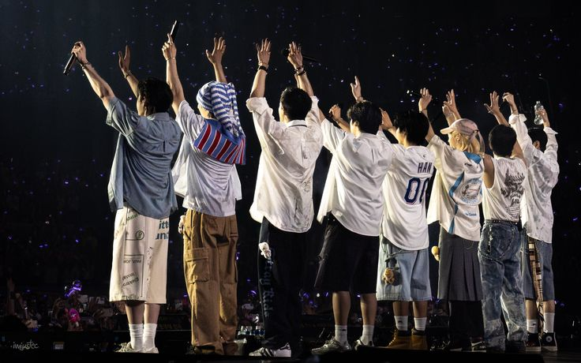

Como surgiu
Criado pela JYP Entertainment, o grupo conquistou milhões de fãs ao redor do mundo com sua identidade única, músicas intensas e uma narrativa construída através de suas letras e conceitos. Com um estilo autêntico e cheio de personalidade, Stray Kids se destaca por transmitir mensagens profundas sobre crescimento, desafios e liberdade, conectando-se de forma poderosa com seu público.
O grupo foi criado pela empresa JYP Entertainment, mas não foi simplesmente montado pela empresa como outros grupos de K-pop. Quem teve a ideia e formou o grupo foi o próprio Bang Chan. Ele escolheu pessoalmente os membros que acreditava terem potencial e conexão para criar algo único
O reality que definiu tudo
Em 2017, a JYP lançou o programa Stray Kids
Neste reality
- Os integrantes passaram por desafios
- Precisavam provar talento em canto, rap e dança
- Mostraram principalmente trabalho em equipe
Mesmo com eliminações durante o programa, no final…
todos os membros foram confirmados juntos
O debut
O grupo debutou oficialmente em 2018 com o álbum I Am NOT
Desde o início, eles já tinham algo diferente:
- Produção própria (principalmente pelo trio 3RACHA)
- etras com mensagens reais sobre insegurança, identidade e crescimento
- Um som mais experimental e intenso
Formação e conceito inicial
O grupo começou com 9 membros:
- Bang Chan (líder)
- Lee Know
- Changbin
- Hyunjin
- Han
- Felix
- Seungmin
- I.N
- Woojin (que saiu do grupo em 2019)
Hoje o grupo segue com 8 integrantes.
3RACHA: o coração criativo
Antes mesmo do debut, três membros já produziam músicas juntos:
3RACHA Formado por Bang Chan, Changbin e Han
Eles são responsáveis por:
- Composição ✍️
- Produção 🎛️
- Identidade sonora 🔥
Isso faz com que o Stray Kids tenha um estilo MUITO próprio, diferente de muitos grupos.
Era “I Am” – identidade e começo
A primeira trilogia deles:
Tema principal: “Quem sou eu no mundo?”
Eles falam sobre:/p>
- insegurança
- pressão social
- busca por identidade